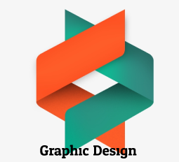
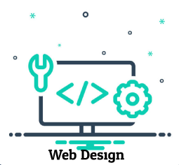

🔍
Sonam Choden

I am Sonam Choden, a software engineering student at College of Science and Technology, passionate about developing innovative solutions to real-world problems. Right now I am learning computer languages such as Python. I have a strong interest in software development and enjoy tackling challenges through coding. I am eager to apply my skills in a dynamic team setting, contributing to impactful projects while continuing to learn and grow in the field. I am passionate about building user-friendly applications and continuously learning about new technologies.
Female
Born March 12, 2004
Haa
02240359.cst@rub.edu.bt
17260801
Services

